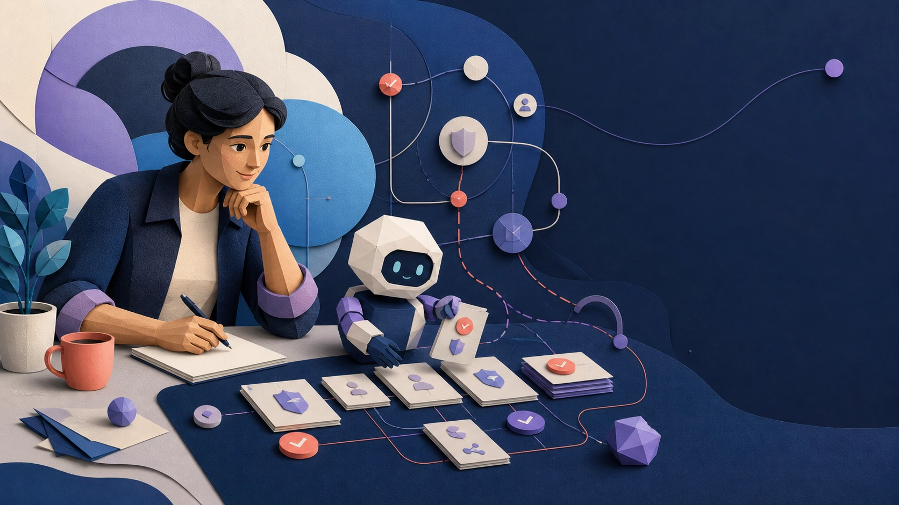
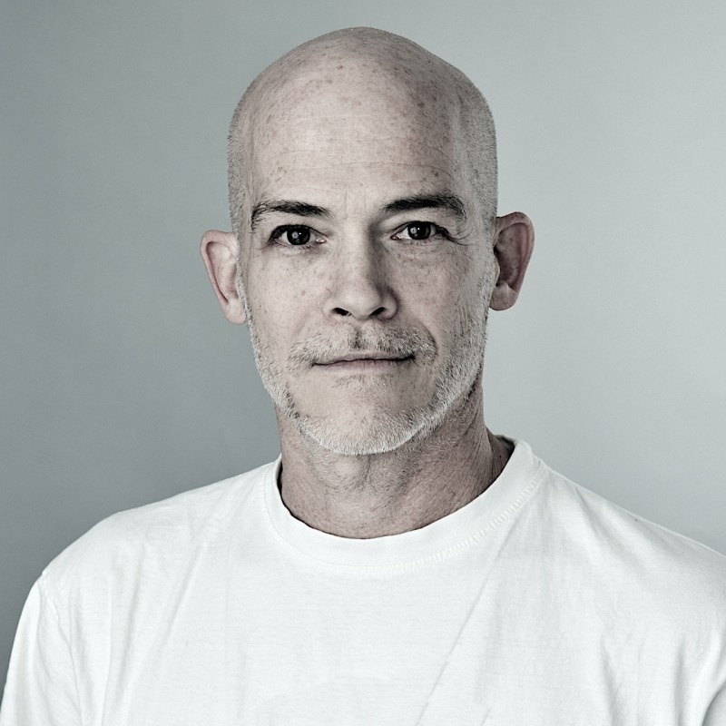

Case study

Designing for the supervisor
How people oversee AI agents, understand their reasoning and step in when it matters.

Amit Kaplinsky, a designer and a builder in Tel Aviv. 12 years designing complex B2B and cyber products. Founding designer twice, at Shift and Veriti.
Building something that doesn't feel right yet?
Available for freelance and fractional work.